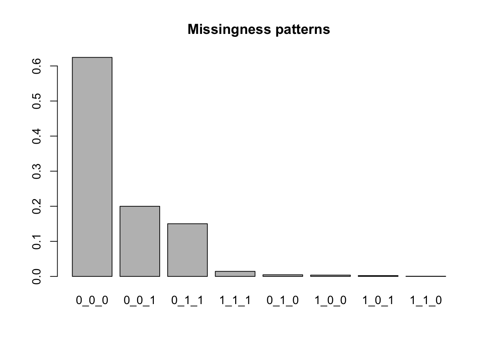
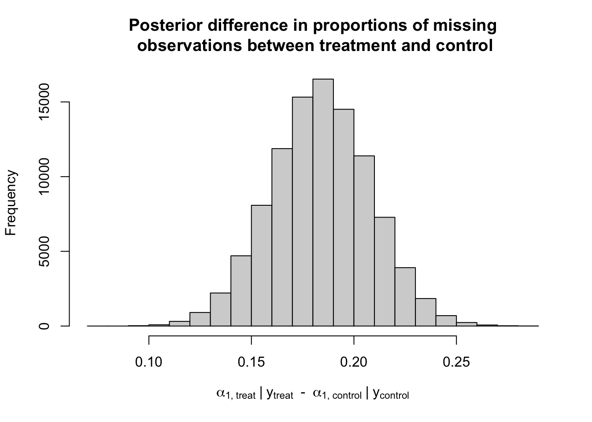
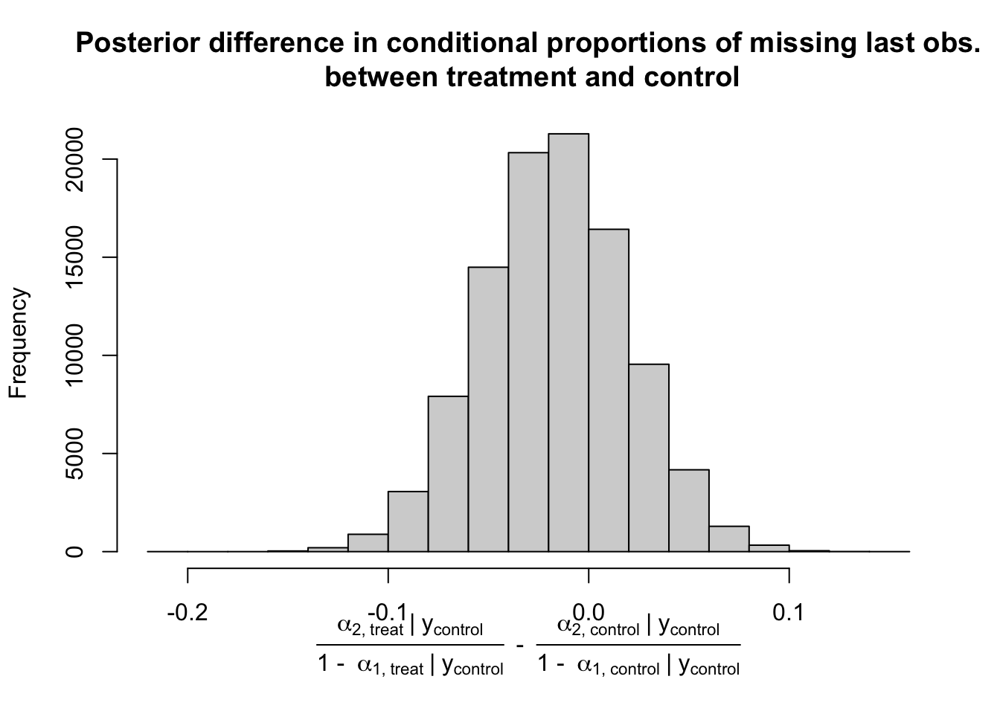
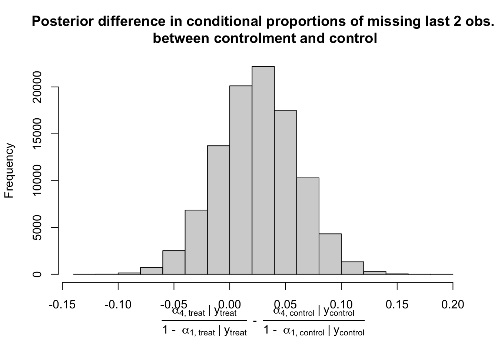
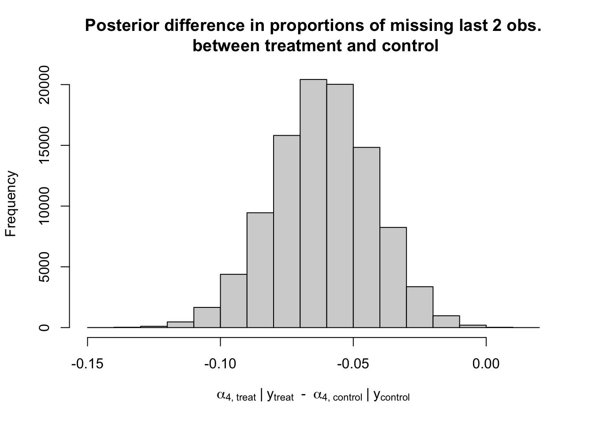
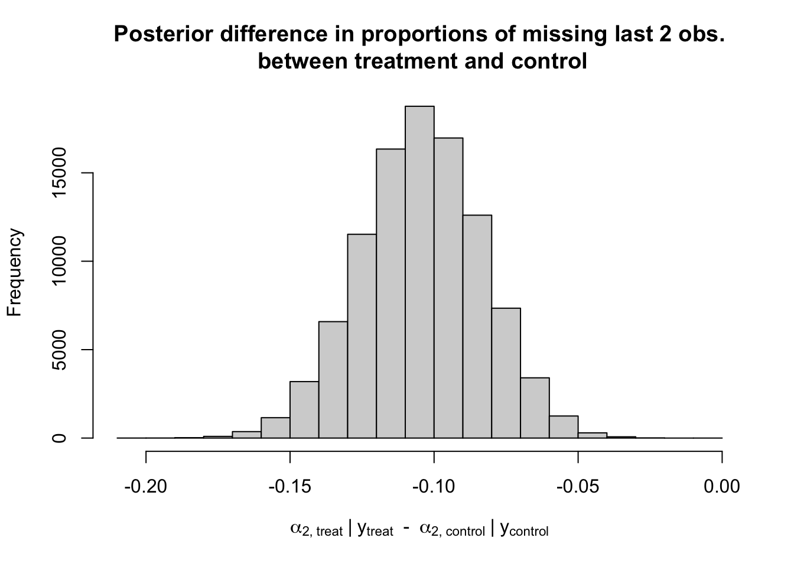
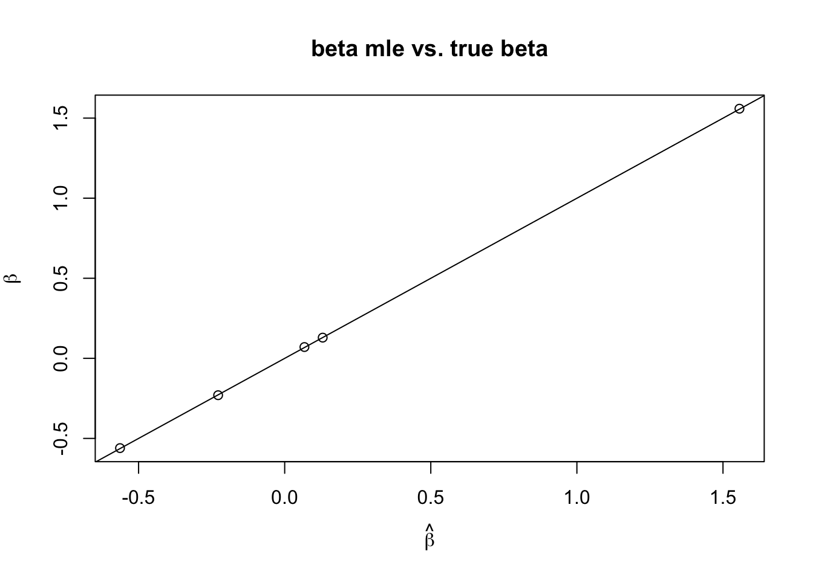
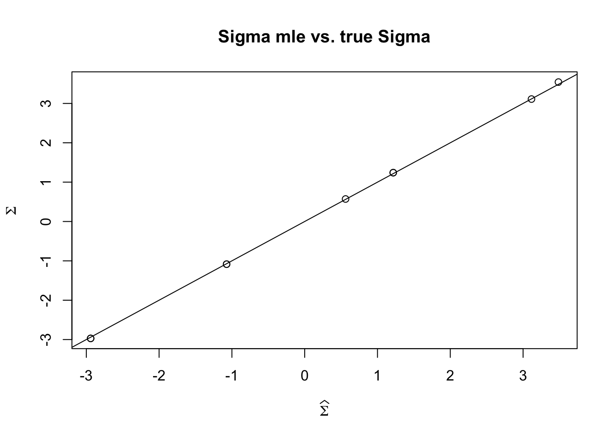
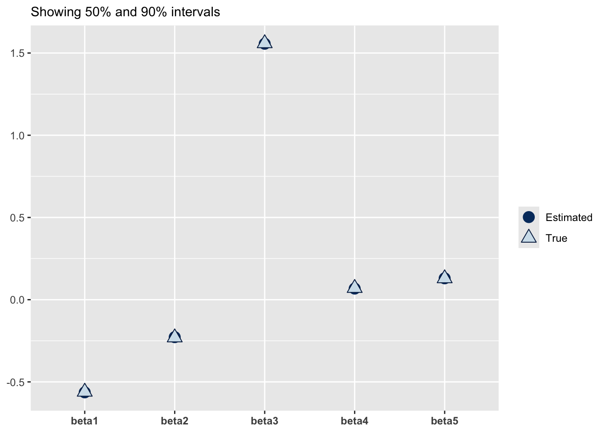
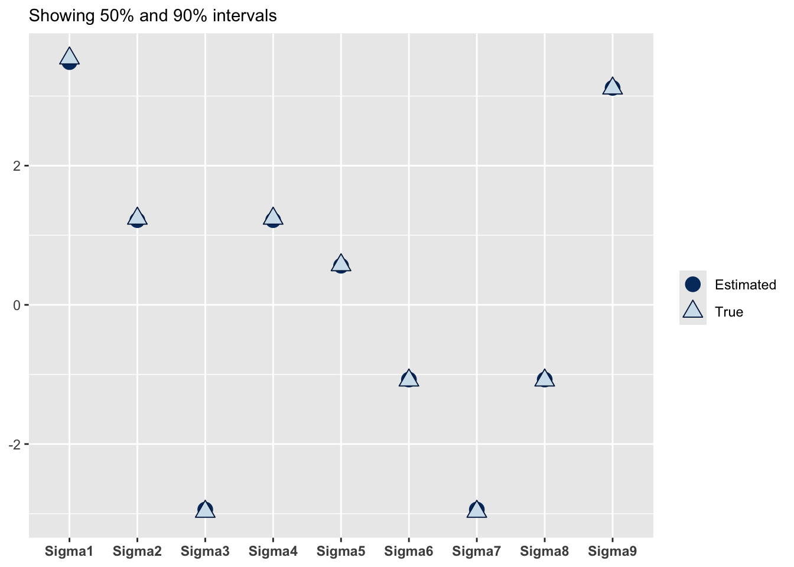

library(Surrogate)
data("Schizo_PANSS")HW 2 solutions
Question 1
Load the Surrogate package in R and load the dataset Schizo_PANSS:
The dataset combines five clinical trials aimed at determining if risperidone decreases the Positive and Negative Syndrome Score (PANSS) over time compared to a control treatment for patients with schizophrenia. These are longitudinal trials where patients are assessed at weeks 1, 2, 4, 6 and 8 after being assigned to a treatment arm.
Each row in the dataset is a different trial participant, and Week1, Week2, Week4, Week6, Week8 records the change in PANSS from baseline. The variable Treat represents whether the patient was enrolled in the control (-1) or if the patient was in the risperidone arm (1).
Subset the data to include only Week1, Week4 and Week8:
hw_data <- Schizo_PANSS[,c("Id","Treat","Week1","Week4","Week8")]- Summarize the missingness patterns in the
hw_datadataset. How many missingness patterns are there? What are they? What proportion of patients are associated with each missingness pattern?
Solution
gen_miss_patterns <- function(mat) {
patterns <- mat |>
is.na() |>
apply(2,as.integer) |>
apply(1, \(row) {
paste(row,collapse = "_")
})
return(patterns)
}
y_data <- hw_data[,c("Week1","Week4","Week8")]
miss_patterns <- gen_miss_patterns(y_data)
tab_miss <- table(miss_patterns)
prop_miss <- prop.table(tab_miss)
prop_miss <- sort(prop_miss,decreasing = TRUE)
barplot(prop_miss, main = "Missingness patterns")
There are 8 missingness patterns, and the proportions are plotted above.
- How would you assess whether there is evidence that treatment affects missingness? Is there evidence that treatment affects the missingness pattern?
Solution
There are many ways to do this; one could do a chi-squared test, an LRT test, one could do multinomial logistic regression, etc. Because I’m predisposed to find Bayesian solutions to things, I’ll fit two separate multinomial models with uniform dirichlet priors and compare the posteriors:
rdirichlet <- function(n, alpha) {
d <- length(alpha)
rates <- rep(1, d)
gammas <- replicate(n = n,
rgamma(d, shape = alpha,
rate = rates)
)
draws <- sweep(gammas, MARGIN = 2, STATS = colSums(gammas), FUN = "/")
return(t(draws))
}
fac_levels <- names(tab_miss)
miss_patterns_treat <-
hw_data |>
subset(Treat == 1) |>
_[,c("Week1","Week4","Week8")] |>
gen_miss_patterns() |>
factor(levels = fac_levels)
miss_patterns_control <-
hw_data |>
subset(Treat == -1) |>
_[,c("Week1","Week4","Week8")] |>
gen_miss_patterns() |>
factor(levels = fac_levels)
y_treat <- table(miss_patterns_treat)
y_control <- table(miss_patterns_control)
d <- length(y_treat)
alpha_prior <- rep(1, d)
post_treat <- rdirichlet(n = 1e5, alpha = alpha_prior + y_treat)
post_control <- rdirichlet(n = 1e5, alpha = alpha_prior + y_control)
diffs <- post_treat - post_controlThe first column of the diffs matrix has information on whether there is a difference between the treatment and the control groups for the proportion of people who have missing observations. A histogram reveals that the posterior distribution for the proportion of the treatment group with missing data is greater than the proportion of the control group with missing data:
hist(diffs[,1], main = "Posterior difference in proportions of missing\n observations between treatment and control",
xlab = bquote(alpha["1,"~treat]~"|"~y[treat]~" - "~alpha["1,"~control]~"|"~y[control]))
As for whether the treatment affects the missingness pattern, we can look at the conditional distribution of having a certain missing pattern given that an individual has missing data. The first pattern I’ll show is the posterior for dropping out between week 4 and week 8, conditional on having had a missing observation:
hist(post_treat[,2] / (1 - post_treat[,1]) -
post_control[,2] / (1 - post_control[,1]) , main = "Posterior difference in conditional proportions of missing last obs.\n between treatment and control",
xlab = bquote(over(alpha["2,"~treat]~"|"~y[control],"1 - "~alpha["1,"~treat]~"|"~y[control])~" - "~over(alpha["2,"~control]~"|"~y[control],"1 - "~alpha["1,"~control]~"|"~y[control])))
It appears there isn’t much difference in the proportion of people missing an observation who dropped out between week 4 and week 8 of the study. The same goes for people who dropped out between week 1 and week 4:
hist(post_treat[,4] / (1 - post_treat[,1]) -
post_control[,4] / (1 - post_control[,1]), main = "Posterior difference in conditional proportions of missing last 2 obs.\n between controlment and control",
xlab = bquote(over(alpha["4,"~treat]~"|"~y[treat],"1 - "~alpha["1,"~treat]~"|"~y[treat])~" - "~over(alpha["4,"~control]~"|"~y[control],"1 - "~alpha["1,"~control]~"|"~y[control])))
Of course, marginally there is evidence that there are differences in these proportions (namely, marginalizing over whether the individual will have missingness or complete data):
hist(post_treat[,4] - post_control[,4] , main = "Posterior difference in proportions of missing last 2 obs.\n between treatment and control",
xlab = bquote(alpha["4,"~treat]~"|"~y[treat]~" - "~alpha["4,"~control]~"|"~y[control]))
hist(post_treat[,2] - post_control[,2] , main = "Posterior difference in proportions of missing last 2 obs.\n between treatment and control",
xlab = bquote(alpha["2,"~treat]~"|"~y[treat]~" - "~alpha["2,"~control]~"|"~y[control]))
- How many people dropped out of the study after Week 1, or Week 4 vs. had intermittent missingness? For patients who dropped out, is there evidence that PANSS at the prior measurement predicted dropout? What about for the patients with intermittent missingness?
Solution
For the first part of the question:
drop_out_btwn_4_8 <- tab_miss["0_0_1"]
drop_out_btwn_1_4 <- tab_miss["0_1_1"]
intermittent_1 <- sum(tab_miss) -
(tab_miss["0_0_0"] + drop_out_btwn_4_8 + drop_out_btwn_1_4)
intermittent_2 <- intermittent_1 - tab_miss["1_1_1"]
intermittent_3 <- intermittent_2 - tab_miss["1_1_0"]I’ll accept many answers here, as long as students quantified dropout correctly as 430 dropouts between week 4 and 8, 323 dropouts between week 1 and 4, and were specific about what patterns they considered intermittent. I have examples above for 55, 24, 23, but anything is ok as long as they didn’t include the dropout or the complete observations in the intermittent count totals.
As for whether prior PANSS affects dropout, I’ll just throw the people who dropped out between week 4 and week 8 into a logistic regression along with those who have complete cases. Because this question was pretty vague, I’ll take any sort of modeling of missingness on previous PANSS scores.
Another way to look at this would be the following:
dropout_wk_4_8 <- miss_patterns == "0_0_1"
complete_cases <- miss_patterns == "0_0_0"
drop_4_8 <- hw_data[dropout_wk_4_8,]
completes <- hw_data[complete_cases,]
y2_drop_4_8 <- drop_4_8$Week4
y2_complete <- completes$Week4
y_prev <- c(y2_drop_4_8, y2_complete)
miss <- c( rep(1, nrow(drop_4_8)),
rep(0, nrow(completes)))
summary(glm(miss ~ y_prev, family = "binomial"))
Call:
glm(formula = miss ~ y_prev, family = "binomial")
Coefficients:
Estimate Std. Error z value Pr(>|z|)
(Intercept) -0.905862 0.069329 -13.07 < 2e-16 ***
y_prev 0.015473 0.003005 5.15 2.61e-07 ***
---
Signif. codes: 0 '***' 0.001 '**' 0.01 '*' 0.05 '.' 0.1 ' ' 1
(Dispersion parameter for binomial family taken to be 1)
Null deviance: 1964.4 on 1772 degrees of freedom
Residual deviance: 1936.7 on 1771 degrees of freedom
AIC: 1940.7
Number of Fisher Scoring iterations: 4According to the glm output, there is evidence against dropout being independent of previous PANSS scores. The direction of the coefficient makessense here; this means that an increase in PANSS score in Week 4 predicts a higher probability of missingness in Week 8.
We can do the same analysis for scores in week 1 predicting missingness in week 4:
dropout_wk_1_4 <- miss_patterns == "0_1_1"
dropout_wk_4_8 <- miss_patterns == "0_0_1"
complete_cases <- miss_patterns == "0_0_0"
drop_4_8 <- hw_data[dropout_wk_4_8,]
drop_1_4 <- hw_data[dropout_wk_1_4,]
completes <- hw_data[complete_cases,]
y1_drop_4_8 <- drop_4_8$Week1
y1_drop_1_4 <- drop_1_4$Week1
y1_complete <- completes$Week1
y_prev <- c(
y1_drop_1_4,
y1_drop_4_8,
y1_complete
)
miss <- c(rep(1, nrow(drop_1_4)),
rep(0,nrow(drop_4_8)),
rep(0, nrow(completes)))
summary(glm(miss ~ y_prev, family = "binomial"))
Call:
glm(formula = miss ~ y_prev, family = "binomial")
Coefficients:
Estimate Std. Error z value Pr(>|z|)
(Intercept) -1.516007 0.062725 -24.169 <2e-16 ***
y_prev 0.047589 0.004902 9.708 <2e-16 ***
---
Signif. codes: 0 '***' 0.001 '**' 0.01 '*' 0.05 '.' 0.1 ' ' 1
(Dispersion parameter for binomial family taken to be 1)
Null deviance: 1801.6 on 2095 degrees of freedom
Residual deviance: 1696.3 on 2094 degrees of freedom
AIC: 1700.3
Number of Fisher Scoring iterations: 5Indeed, we find the same conclusion, that there is evidence against missingness in Week 4 being independent of Week 1’s PANSS score.
- Is it reasonable to assume that missingness is MCAR for this dataset? Why or why not? What about MAR?
No, missingness is certainly not MCAR given the results from question 3. I would argue that it may be unreasonable to assume that missingness is MAR, and instead may be MNAR because of the process we’re focused on. We already have evidence that PANSS in at Week 1 affects missingness in Week 4 and PANSS in Week 4 affects missingness in Week 8; these are fairly large intervals between measurements, so it would be reasonable to assume that PANSS scores closer in time to measurements could change the probability of missingness. At the extreme, it makes sense that if PANSS score is high, it would increase the probability of missingness.
- Subset the data to complete cases only and, using the algorithm we learned in class:
\[ \beta^{(t+1)} = \lp \textstyle\sum_i X_i^T (\Sigma^{(t)})^{-1} X_i \rp^{-1} \textstyle \sum_i X_i^T (\Sigma^{(t)})^{-1} y_i \]
\[ \Sigma^{(t+1)} = \frac{1}{n} \textstyle\sum_i (y_i - X_i \beta^{(t)})(y_i - X_i \beta^{(t)})^T \]
Fit the following model to the complete case data:
\[ y_i \mid \text{Treat}_i \sim \text{Normal}(\mu + \beta_1 \text{Treat}_i + \beta_2 t + \beta_3 \text{Treat}_i t, \Sigma) \]
where \(t\) is the vector \(1, 4, 8\) indicating at what time points the measurements were taken and \(\mu\) is a scalar mean.
Include your MLEs for \(\Sigma\) and the vector \((\mu, \beta_1, \beta_2, \beta_3)\), and be sure to interpret your inferred coefficients in the context of the PANSS dataset.
It’ll help to reshape the data into long format from wide format:
comp_case <- hw_data |>
subset(
!is.na(Week1) &
!is.na(Week4) &
!is.na(Week8)
)
long_case <-
stats::reshape(
comp_case,
direction = "long",
varying = 3:5,
sep = ""
)[,-5]
names(long_case) <- c("Id","Treat","time","panss")In order to make sure your algorithm is successful, include a test of your algorithm on on this simulated dataset, where you compare your algorithm’s inferences to the true values of \(\beta\) and \(\Sigma\):
set.seed(123)
n <- 10000
p <- 5
K <- 3
X <- list()
beta <- rnorm(p)
L <- matrix(rnorm(K * K),K,K)
Sigma <- L %*% t(L)
y <- list()
for (i in 1:n) {
X[[i]] <- matrix(rnorm(p * K),K,p)
y[[i]] <- X[[i]] %*% beta + MASS::mvrnorm(mu = rep(0,K), Sigma = Sigma)
}Solution
Here is my algorithm below:
mle <- function(b_0, S_0, Xs, ys, K) {
S_old <- S_0
b_old <- b_0
p <- length(b_0)
N <- length(Xs)
d <- length(ys[[1]])
epsilon <- Inf
k <- 0
while (k < K & epsilon > 1e-8) {
k <- k + 1
inv_sig <- solve(S_old)
XtX <- matrix(0, p, p)
Xty <- rep(0, p)
cprod <- matrix(0, d, d)
for (i in 1:N) {
XtX_i <- t(Xs[[i]]) %*% inv_sig %*% Xs[[i]]
Xty_i <- t(Xs[[i]]) %*% inv_sig %*% ys[[i]]
XtX <- XtX + XtX_i
Xty <- Xty + Xty_i
error <- ys[[i]] - Xs[[i]] %*% b_old
cprod <- cprod + outer(error[,1], error[,1])
}
b_new <- solve(XtX) %*% Xty
S_new <- 1/N * cprod
epsilon_b <- sum((b_new - b_old)^2)
epsilon_S <- sum((S_new - S_old)^2)
epsilon <- sqrt(epsilon_b + epsilon_S)
b_old <- b_new
S_old <- S_new
}
return(list(b = b_old, S = S_old))
}which when applied to the simulated data returns:
sim_res <- mle(rep(0,ncol(X[[1]])), diag(length(y[[1]])), X, y, 100)
beta_mle <- sim_res$b
Sigma_mle <- sim_res$S
plot(beta_mle, beta,main = "beta mle vs. true beta",
xlab = bquote(hat(beta)), ylab = bquote(beta))
abline(0,1)
plot(as.vector(Sigma_mle), as.vector(Sigma),main = "Sigma mle vs. true Sigma",
xlab = bquote(widehat(Sigma)), ylab = bquote(Sigma))
abline(0,1)
The results look good enough, though a true test of the algorithm would require a simulation study and a quantification of the asymptotic sampling variance of our estimators. It is possible to derive these for both \(\hat{\beta}\) and \(\hat{\Sigma}\); we may do this in future classes.
As for the results when we apply the model to the PANSS complete cases, we get:
mm <- model.matrix(~ Treat*time, long_case)
Id_list <- unique(long_case$Id)
X_panss <- list()
y_panss <- list()
for (i in seq_along(Id_list)) {
id_i <- Id_list[i]
sel_i <- long_case$Id == id_i
X_panss[[i]] <- mm[sel_i,]
y_panss[[i]] <- long_case$panss[sel_i]
}
panss_res <- mle(rep(0,ncol(mm)), diag(length(y_panss[[1]])), X_panss, y_panss, 100)Our coefficients are below:
panss_res$b [,1]
(Intercept) -7.02068631
Treat -0.52528531
time -1.50797733
Treat:time -0.07061867As long as students are interpreting the coefficients correctly as would be expected in a regresion class, these answers will be right. Given that the trial is randomized, it’s important to note that we can interpret the treatment coefficient causally, as in treatment with risperidone lead to a -0.52 decrease in PANSS score compared to those in the control group, all else being equal.
Along with our inferered variance covariance matrix:
cov2cor(panss_res$S) 1.1 1.4 1.8
1.1 1.0000000 0.5742689 0.5052224
1.4 0.5742689 1.0000000 0.7848130
1.8 0.5052224 0.7848130 1.0000000Which I’ve converted into correlations for easier interpretation. This says that the residual correlation between the PANSS measurements at week 1 and week 4, conditional on treatment group and the time of the measurement is around 0.6, while the residual correlation between the measurement at week 4 and week 8 is around 0.8. This means that we’ve likely missed including important data about our participants that shows up as correlations in our residuals.
- How might you expand this model based on your initial data analysis? There are no wrong answers.
Any answer here will do as long as it is somewhat thoughtful. I would add intercepts for each outcome \(y\).
Question 2
In Question 1, you analyzed the complete cases in the PANSS meta-analysis dataset using the repeated measures model:
\[ y_i \mid \text{Treat}_i \sim \text{Normal}(\mu + \beta_1 \text{Treat}_i + \beta_2 t + \beta_3 \text{Treat}_i t, \Sigma) \] Let \(\beta = (\mu, \beta_1, \beta_2, \beta_3)\) in what follows. Fit the following Bayesian model for the complete cases:
\[ \begin{aligned} y_i \mid \text{Treat}_i, \beta, \Sigma & \sim \text{Normal}(\mu + \beta_1 \text{Treat}_i + \beta_2 t + \beta_3 \text{Treat}_i t, \Sigma) \\ \beta \mid \mu_0, \Sigma_0 & \sim \text{Normal}(\mu_0, \Sigma_0) \\ \Sigma \mid \nu_0, V_0 & \sim \text{Inv-Wishart}(\nu_0, V_0) \end{aligned} \]
The sampling algorithm is as follows:
Repeat the following for \(b = 1, \dots, B\) chains.
Draw \(\beta^0, \Sigma^0\) starting values from the priors for \(\beta\) and \(\Sigma\).
For \(t=0, \dots, S-1\)
Draw \(\beta\) according to the distribution \[ \begin{aligned} \beta^{t+1} \mid \Sigma^{t}, y, X & \sim \text{Normal}(\bar{\beta}, (\textstyle\sum_i X_i^T (\Sigma^{(t)})^{-1} X_i + (\Sigma_0)^{-1})^{-1}) \\ \bar{\beta} & = (\textstyle\sum_i X_i^T (\Sigma^{(t)})^{-1} X_i + \Sigma_0^{-1})^{-1}(\textstyle\sum_i X_i^T (\Sigma^{(t)})^{-1} y_i + \Sigma_0^{-1} \mu_0) \end{aligned} \]
Draw \(\Sigma^{t+1}\) according to \[ \begin{aligned} \Sigma^{t+1} \mid \beta^{t+1}, y, X & \sim \text{Inverse-Wishart}(n + \nu_0, V_0 + \textstyle\sum_i (y_i - X_i \beta^t)(y_i - X_i \beta^t)^T) \end{aligned} \]
Discard the first \(\frac{S}{2}\) iterations, and keep the set of draws \(\{ (\beta^s, \Sigma^s),\, s = \frac{S}{2},\dots, S-1\}\).
The final set of draws \(B \times \frac{S}{2}\) draws are approximately distributed according to \(p(\beta, \Sigma \mid y)\)
Part 1
Before running your model, test your algorithm on the simulated dataset above, using the prior hyperparameters, with \(B = 4\) and \(S = 500\): \[ \mu_0 = 0, \Sigma_0 = I_p, \nu_0 = 3, V_0 = I_p \]
In order to run this model, you’ll need to be able to draw from an inverse Wishart distribution. Use the version that is implemented in the packages MCMCpack.
When you run your chains, you’ll have 4 chains with 250 draws of each parameter per chain. You can use these draws to assess whether there is evidence against having reached the steady state distribution. Use the package posterior and rhat in the posterior package to report the univariate \(\hat{R}\) statistics for each dimension of the beta vector.
To do so, you’ll need to arrange the draws for each dimension of beta into a matrix with rows corresponding to the 250 iterations and columns corresponding to the chains. Then you can pass that matrix to posterior::rhat to get an estimate of how much the scale of the posterior distribution would shrink as \(S \to \infty\). Numbers near \(1\), or \(\hat{R} \leq 1.01\) indicate that one may not have much to gain from running the chains for more iterations.
Solution
bayes <- function(b_0, S_0, mu_0, Sigma_0, nu_0, V_0, Xs, ys, K) {
S_old <- S_0
b_old <- b_0
p <- length(b_0)
N <- length(Xs)
d <- length(ys[[1]])
big_y <- do.call(c, ys)
big_X <- do.call(rbind, Xs)
draws_Sigma <- matrix(NA_real_, K, d^2)
draws_beta <- matrix(NA_real_, K, p)
U_sig_0 <- chol(Sigma_0)
sig_0_inv <- chol2inv(U_sig_0)
k <- 0
while (k < K) {
k <- k + 1
U_sig <- chol(S_old)
inv_sig <- chol2inv(U_sig)
XtX <- matrix(0, p, p)
Xty <- rep(0, p)
cprod <- matrix(0, d, d)
for (i in 1:N) {
Xt_i <- t(Xs[[i]]) %*% inv_sig
XtX_i <- Xt_i %*% Xs[[i]]
Xty_i <- Xt_i %*% ys[[i]]
XtX <- XtX + XtX_i
Xty <- Xty + Xty_i
}
U_left <- chol(XtX + sig_0_inv)
bar_b <- backsolve(U_left, Xty + sig_0_inv %*% mu_0, transpose = TRUE)
bar_b <- backsolve(U_left, bar_b)
b_new <- MASS::mvrnorm(1, mu = bar_b, Sigma = chol2inv(U_left))
error <- big_y - big_X %*% b_new
error_mat <- matrix(error, d, N)
cprod <- error_mat %*% t(error_mat)
S_new <- MCMCpack::riwish(nu_0 + N, V_0 + cprod)
draws_Sigma[k,] <- as.vector(S_new)
draws_beta[k,] <- b_new
b_old <- b_new
S_old <- S_new
}
return(list(b = draws_beta, S = draws_Sigma))
}
mcmc_sample <- function(f_draw_beta, f_draw_Sigma, mu_0, Sigma_0, nu_0 , V_0,
Xs, ys, K = 1000, n_chains = 4) {
draws_beta <- array(NA_real_, c(n_chains, K, length(mu_0)))
draws_Sigma <- array(NA_real_, c(n_chains, K, prod(dim(V_0))))
for (chain_i in seq_len(n_chains)) {
b_0 <- f_draw_beta()
S_0 <- f_draw_Sigma()
chain_res <- bayes(b_0, S_0, mu_0 = mu_0, Sigma_0 = Sigma_0, nu_0 = nu_0, V_0 = V_0,
Xs = Xs, ys = ys, K = K)
draws_beta[chain_i,,] <- chain_res$b
draws_Sigma[chain_i,,] <- chain_res$S
}
return(list(b = draws_beta, S = draws_Sigma))
}
samples <- mcmc_sample(\() {rnorm(p)}, \() {diag(rexp(K))}, mu_0 = rep(0,p), Sigma_0 = diag(p), nu_0 = 2, V_0 = diag(K),
Xs = X, ys = y, K = 500)with Rhats of
sapply(1:dim(samples$S)[3], \(i) posterior::rhat(t(samples$S[,251:500,i])))[1] 0.9998074 0.9992597 0.9999993 0.9992597 1.0011053 0.9997203 0.9999993
[8] 0.9997203 1.0006502sapply(1:dim(samples$b)[3], \(i) posterior::rhat(t(samples$b[,251:500,i]))) [1] 1.0000594 0.9996801 1.0019354 1.0028355 1.0041509dimnames(samples$b) <- list(NULL, NULL, paste0("beta",1:5))
bayesplot::mcmc_recover_intervals(aperm(samples$b,c(2,1,3))[251:500,,], beta)
dimnames(samples$S) <- list(NULL, NULL, paste0("Sigma",1:9))
bayesplot::mcmc_recover_intervals(aperm(samples$S,c(2,1,3))[251:500,,], as.vector(Sigma))
Pretty good recovery of the parameters
Can you describe a better way to test whether your algorithm is correctly written using simulated data and posterior quantiles? See Talts et al. (2018) for some ideas.
Solution
Use the simulation based calibaration described in the paper, which we also described in class:
- Simulate from your priors
- Conditional on priors, simulate from your data
- Fit your model
- Draw \(L\) samples from your posterior
- Compute the rank of the draw from your prior against the draws from your posterior
- Repeat
- Histogram of the ranks should be uniform, which can be tested in many different ways
Part 2
Run your model with the same priors as above on the comp_case data from above, and report 95% central posterior quantiles for each dimension of \(\beta\).
Also report the 95% posterior quantiles for the parameters: \(\Sigma_{2,1} / \sqrt{\Sigma_{1,1}\Sigma_{2,2}}\), \(\Sigma_{3,1} / \sqrt{\Sigma_{1,1}\Sigma_{3,3}}\), and \(\Sigma_{3,2} / \sqrt{\Sigma_{2,2}\Sigma_{3,3}}\), or the correlation between the errors for each of the PANSS measurement occasions.
This may be done by defining the appropriate transformations of the parameter draws.
Solution
samples <- mcmc_sample(\() {rnorm(ncol(mm))}, \() {diag(rexp(length(y_panss[[1]])))}, mu_0 = rep(0,ncol(mm)),
Sigma_0 = 1 * diag(ncol(mm)),
nu_0 = 3, V_0 = diag(length(y_panss[[1]])),
Xs = X_panss, ys = y_panss, K = 500)
post_draws_S <- samples$S[,251:500,]Intervals:
apply(samples$b[,251:500,], 3, quantile, c(0.025,0.975)) [,1] [,2] [,3] [,4]
2.5% -6.662225 -1.7809288 -1.740822 -0.2002626
97.5% -4.971769 -0.2523569 -1.390680 0.1095659Central 95% quantiles for \(\Sigma_{2,1} / \sqrt{\Sigma_{1,1}\Sigma_{2,2}}\):
quantile(post_draws_S[,,2] / sqrt(post_draws_S[,,1] * post_draws_S[,,5]),c(0.025,0.975)) 2.5% 97.5%
0.5464869 0.6202370 Quantiles for \(\Sigma_{3,1} / \sqrt{\Sigma_{1,1}\Sigma_{3,3}}\):
quantile(post_draws_S[,,3] / sqrt(post_draws_S[,,1] * post_draws_S[,,9]),c(0.025,0.975)) 2.5% 97.5%
0.4689281 0.5467009 Quantiles for \(\Sigma_{3,2} / \sqrt{\Sigma_{2,2}\Sigma_{3,3}}\):
quantile(post_draws_S[,,6] / sqrt(post_draws_S[,,5] * post_draws_S[,,9]),c(0.025,0.975)) 2.5% 97.5%
0.7612633 0.8057481 References
Talts, Sean, Michael Betancourt, Daniel Simpson, Aki Vehtari, and Andrew Gelman. 2018. “Validating Bayesian Inference Algorithms with Simulation-Based Calibration.” arXiv Preprint arXiv:1804.06788.